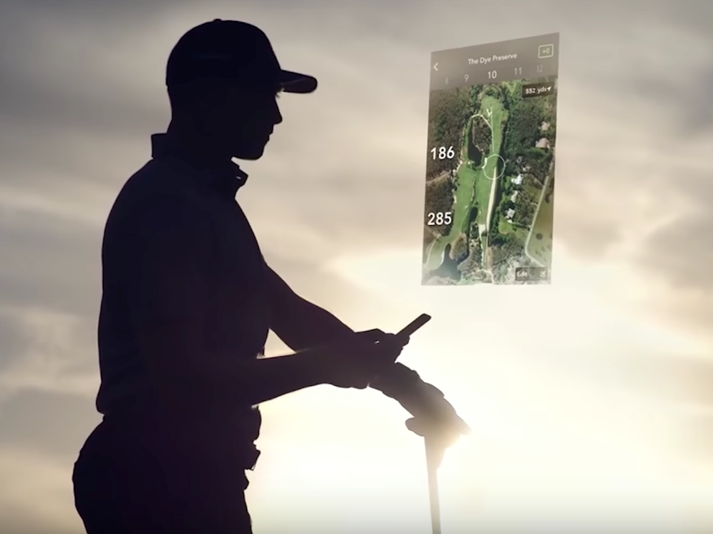
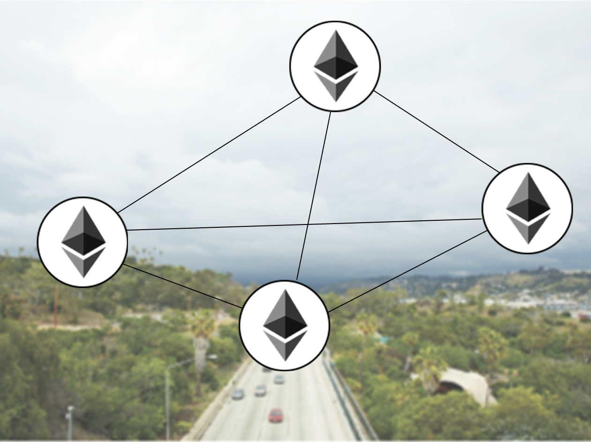
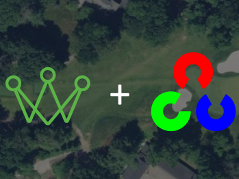

Semantic Segmentation of Small Data using Keras
July 9, 2018

Golf performance tracking startup Arccos joined forces with Commercial Software Engineering (CSE) developers in hopes of
unveiling new improvements to their "virtual caddie" this summer.
Deploying a Batch AI Cluster for Distributed Deep Learning
July 9, 2018

Microsoft and Land O'Lakes partnered to develop an automated solution to identify sustainable farming practices given thousands
of satellite images of Iowan farms. Our primary goal was to reduce the reliance on manual interviewing of farmers
and make it more profitable for farmers to follow sustainable farming practices.
Satellite Images Segmentation and Sustainable Farming
July 9, 2018

Can Machine Learning help with detecting sustainable farming practices? In this blog post inspired by our collaboration with
Land O'Lakes we share the lessons we learned in the image segmentation space.
Building a Private Ethereum Consortium
July 9, 2018

Over the past two years, Microsoft and Webjet have collaborated to build a blockchain-based solution, Rezchain, to help travel
companies reduce payment disputes. In this code story, we’ll share the lessons learned in creating the Rezchain consortium.
In particular, we'll focus on how we solved the challenges involved with enabling Ethereum nodes to peer across virtual
networks.
Using Otsu’s method to generate data
July 9, 2018

In this article, we introduce a technique to rapidly pre-label training data for image segmentation models such that annotators
no longer have to painstakingly hand-annotate every pixel of interest in an image. The approach is implemented in
Python and OpenCV and extensible to any image segmentation task that aims to identify a subset of visually distinct
pixels in an image.